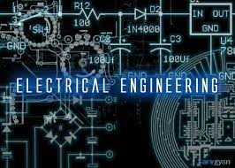

---OUR COURSES---
* COMPUTER SCIENCE AND ENGINEERING

Science Engineering (CSE) encompasses a variety of topics that relates to computation,
like analysis of algorithms, programming languages, program design, software, and computer hardware.
Computer Science engineering has roots in electrical engineering, mathematics, and linguistics.
In the past Computer Science was taught as part of mathematics or engineering departments & in the recent days it has emerged as a separate engineering field.
VISION:- To provide state of art teaching,learning in software and hardware programmers to the students
to enable them to become world-class computer science and engineering graduates to face global compition
MISSION:-To be one of the best computer science and engineering departments in the entire nation
producing world-class engoneers processing excellent knowledge, skills, charecteristics and other attibutes.
* ELECTRONICS ENGINEERING
Electronic engineering (also called electronics and communications engineering) is an electrical engineering discipline which utilizes
nonlinear and active electrical components (such as semiconductor devices, especially transistors and diodes) to design electronic circuits, devices, integrated circuits and their systems.
The discipline typically also designs passive electrical components, usually based on printed circuit boards.
Electronics is a subfield within the wider electrical engineering academic subject but denotes a broad engineering field that covers subfields such as
analog electronics, digital electronics, consumer electronics, embedded systems and power electronics. Electronics engineering deals with implementation of applications,
principles and algorithms developed within many related fields, for example solid-state physics, radio engineering, telecommunications, control systems, signal processing,
systems engineering, computer engineering, instrumentation engineering, electric power control, robotics, and many others.
* ELECTRICAL ENGINEERING

Electrical engineering is an engineering discipline concerned with the study, design and application of equipment, devices and systems which use electricity, electronics, and electromagnetism. It emerged as an identifiable occupation in the latter half of the 19th century after commercialization of the electric telegraph, the telephone, and electrical power generation, distribution and use.
Electrical engineering is now divided into a wide range of different fields, including computer engineering, systems engineering, power engineering, telecommunications, radio-frequency engineering, signal processing, instrumentation, photovoltaic cells, electronics, and optics and photonics. Many of these disciplines overlap with other engineering branches, spanning a huge number of specializations including hardware engineering, power electronics, electromagnetics and waves, microwave engineering, nanotechnology, electrochemistry, renewable energies, mechatronics/control, and electrical materials science.[a]
* CIVIL ENGINEERING

Civil engineering is a professional engineering discipline that deals with the design, construction, and maintenance of the physical and naturally built environment, including public works such as roads, bridges, canals, dams, airports, sewage systems, pipelines, structural components of buildings, and railways.[1][2]
Civil engineering is traditionally broken into a number of sub-disciplines. It is considered the second-oldest engineering discipline after military engineering,[3] and it is defined to distinguish non-military engineering from military engineering.[4] Civil engineering can take place in the public sector from municipal public works departments through to federal government agencies, and in the private sector from locally based firms to global Fortune 500 companies.
* MECHANICAL ENGINEERING

Mechanical engineering is an engineering branch that combines engineering physics and mathematics principles with materials science to design, analyze, manufacture, and maintain mechanical systems.[1] It is one of the oldest and broadest of the engineering branches.
The mechanical engineering field requires an understanding of core areas including mechanics, dynamics, thermodynamics, materials science, structural analysis, and electricity. In addition to these core principles, mechanical engineers use tools such as computer-aided design (CAD), computer-aided manufacturing (CAM), and product lifecycle management to design and analyze manufacturing plants, industrial equipment and machinery, heating and cooling systems, transport systems, aircraft, watercraft, robotics, medical devices, weapons, and others. It is the branch of engineering that involves the design, production, and operation of machinery.[2][3]